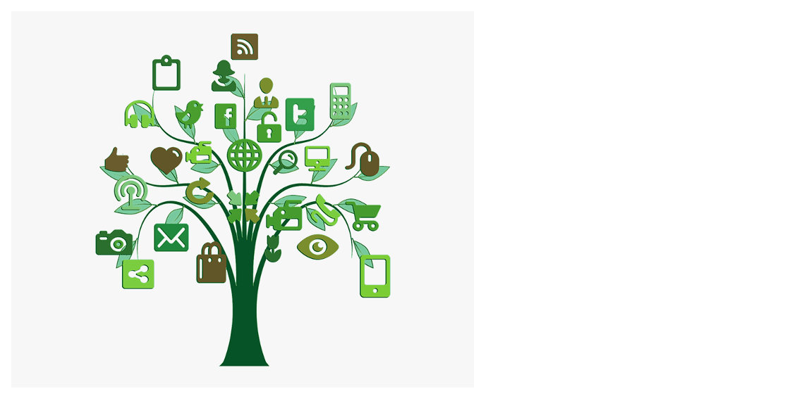

Internet or Interconnected network is “ a medium to get connected to the world and access all the information and communication facilities. ”Vinton Cerf and Bob Kahn’s testimony was the testimony given when they presented the internet to the world. But nowadays, the definition has changed a bit. Nowadays, the internet definition in laymen’s terms is “solution for everything.”
The internet was initially invented for military purposes and then expanded to communication among scientists in the 1960’s. After that, it got developed a lot, and now today, everything and everyone is dependent on the internet. We can communicate with our families who reside overseas instantly and have any questions; we can look them up on the internet. But the question is, now we cross the boundaries to get in touch, but crossing the boundaries has brought us closer? Does it actually work, or does the internet only serve to isolate us?
Today, we will showcase both sides whether the internet has brought us closer or has kept us apart.
In earlier times, if a company manager needed the signature of all its board members on a particular document, he had to send its employee to their place no matter where they live. It results only in waste of money and time on traveling expenditure. Today the internet has every answer to your problem. People worldwide have now come online; they share content and use the same websites. This gives both individuals and businesses more opportunities than ever before, extending their networks and reaching out to people they may otherwise never meet.
A website like Facebook is the best example. People often connect with friends and contacts, such as people they knew at school but have since lost touch with. Seen in this manner, the internet brings us closer together as it offers digital media through which people can interact not just with people they know but also with people in other countries. Using a mixture of the World Wide Web, chatting software, email, and discussion groups, minority groups that traditional media may have ignored have come together online to share information, support each other, and organize events.
Speaking for business people internet has done nothing but boom their business. Merchants and traders who earlier needed to sell in cities to cities, towns to towns, and had to leave their family to earn enough for them; now happily doing the same. The only difference is that now it has gone more conveniently through websites and social media.
There is no doubt in saying that the internet has brought many people closer. However, it is also not wrong to say that it has also severed many relationships. Through the internet, people nowadays have lost touch with physical beings. They have connected with hundreds of people on social media, but they have not made a single friend in the real world. Many businesses got a hike due to the internet, but it is also true that it has extinct many people’s jobs.
In earlier times, people used to have a natural bond because they were genuine. People are now more able to get in touch with others than ever before. However, the quality of communication you experience with someone through a social networking site will never be of the same type as if you were talking face to face. For information, people used to go to school or libraries, which gives them an excuse to learn, but nowadays, Google has replaced that.
In these dystopian worlds, social relationships are not even based on reality but on the façades of other online users, whose anonymous interactions can be untruthful and unreliable. Many studies have concluded that, among other things, the more time people spend on the internet, the less they interact with family and friends physically. Over the phone, the smaller their social circles become, and the more they feel depressed.
In the end, like every coin has two sides, the internet also has two sides. For some people, the online world brings a brilliant opportunity to them for global connections to make. It offers them the chance to experience different lives and cultures by proxy and through Facebook, Twitter. However, as the internet grows and becomes more influential, governments move many public services online, and campaigns are organized through social networking sites rather than the town hall. It suggests that those who aren’t part of the phenomena are indeed more isolated than others. A wise man once said,“ nothing is free in this world,” maybe it applies to the internet as well because, to evolve the world, we have devolved ourselves today.